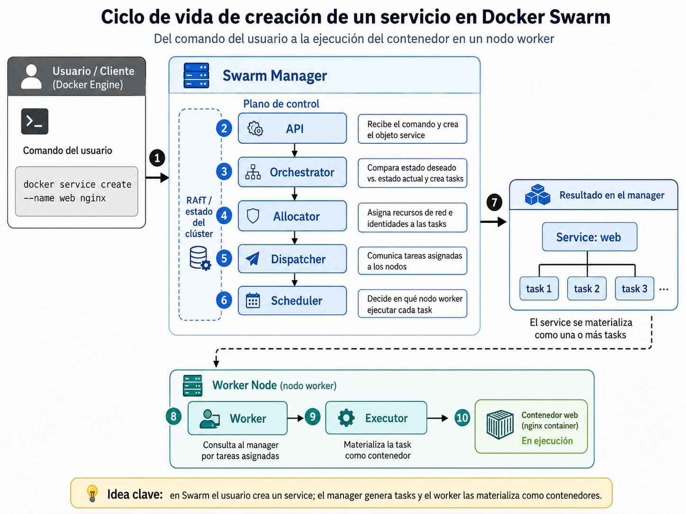
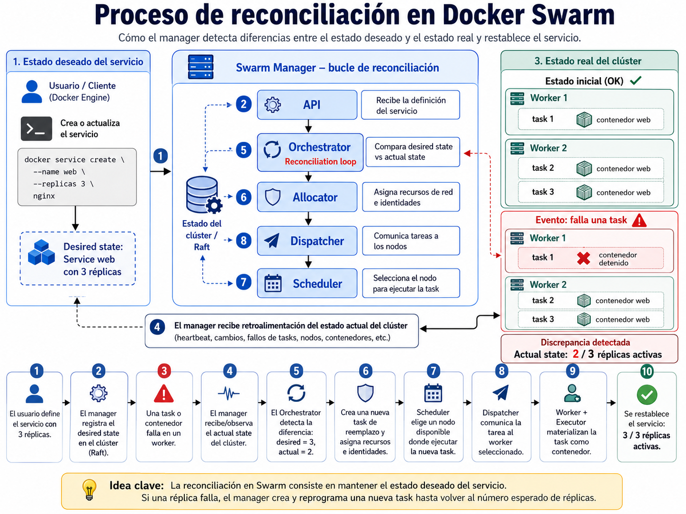

Sistemas Operativos y Servicios de Red | Posgrado
En Docker Swarm no pensamos primero en contenedores individuales.
Pensamos en servicios que el clúster debe mantener ejecutándose con un estado deseado.
“Ejecute este contenedor en esta máquina.”
docker run nginx“Mantenga este servicio con N réplicas en el clúster.”
docker service create --replicas 3 nginxClúster de nodos Docker que operan como una unidad lógica.
Máquina física o virtual que participa en el clúster.
Nodo que administra el estado, agenda tareas y coordina el clúster.
Nodo que ejecuta las tareas asignadas por el manager.
Definición lógica de lo que debe estar corriendo.
Unidad de ejecución que Swarm asigna a un nodo.
Declaración lógica: imagen, réplicas, puertos, red, política.
Unidad que Swarm programa en un nodo específico.
Proceso real que ejecuta la imagen solicitada.
docker service create --name web --replicas 3 nginx
Swarm interpreta: “el servicio web debe tener tres tareas activas; cada tarea se ejecutará como un contenedor basado en nginx”.

Lo que el usuario declara que debe existir.
docker service scale web=5“Quiero 5 réplicas activas del servicio web.”
Lo que realmente está ocurriendo en los nodos.
docker service ps web“¿Cuántas tasks están corriendo y en qué nodos?”
Declarar estado
Observar clúster
Detectar diferencia
Crear, mover o reiniciar tasks
# Ejemplo de diferencia provocada manualmente
docker container rm -f <container_id>
docker service ps web
En ambientes pequeños, un manager puede ejecutar contenedores; en ambientes más estrictos se puede separar plano de control y plano de ejecución.
docker node lsMuestra los nodos del clúster, su rol y disponibilidad.
docker service lsMuestra los servicios declarados y el número de réplicas.
docker service ps webMuestra las tasks del servicio y el nodo donde corren.
docker container lsMuestra los contenedores reales ejecutándose en el nodo actual.
docker service create --name api --replicas 4 mi-api:v1worker-01
container A
worker-02
container B
worker-03
container C
worker-01
container D
El servicio es uno: api. Las tasks son varias: api.1, api.2, api.3, api.4. Los contenedores son las ejecuciones concretas en los nodos.
1. ¿Por qué en Swarm es más preciso hablar de “servicios” que de “contenedores”?
2. Si elimino manualmente un contenedor de un servicio con 3 réplicas, ¿qué debería hacer Swarm?
3. ¿Qué diferencia hay entre docker service ps y docker container ls?
4. ¿Qué parte del modelo conceptual se parece más a un scheduler de sistema operativo?